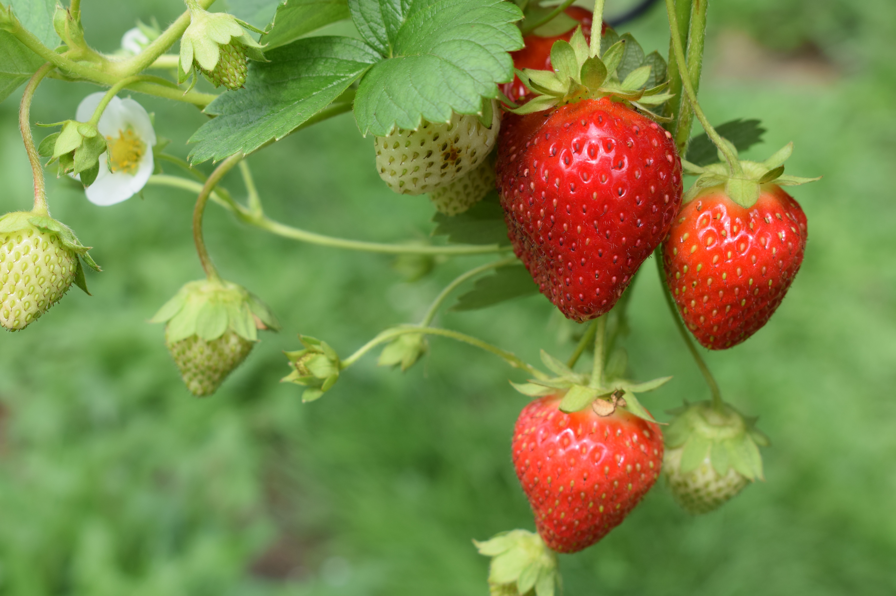

About Strawberries
Strawberries are sweet, red berries that are not only delicious but also rich in vitamin C and antioxidants. They are versatile fruits that can be enjoyed fresh, in desserts, jams, or as a decorative addition to various dishes. Strawberries are perennial plants, and with the right care, you can enjoy a continuous harvest.
Steps to Grow Strawberries
- Choose a sunny location with well-drained soil for planting strawberries.
- Plant strawberry plants or runners in the early spring or late summer.
- Ensure proper spacing between plants to allow for air circulation and prevent diseases.
- Water strawberries consistently, keeping the soil evenly moist but not waterlogged.
- Apply a balanced fertilizer to promote healthy growth and fruit production.
- Mulch around the strawberry plants to control weeds and maintain soil moisture.
- Harvest ripe strawberries when they are fully red, typically in late spring and early summer.
Extra Information
Strawberries are not only a delightful treat but also a low-calorie, nutritious fruit. They are high in fiber, vitamins, and antioxidants. Growing strawberries in containers is a popular option for small spaces. Explore different strawberry varieties, such as June-bearing and everbearing, to extend your harvest season.